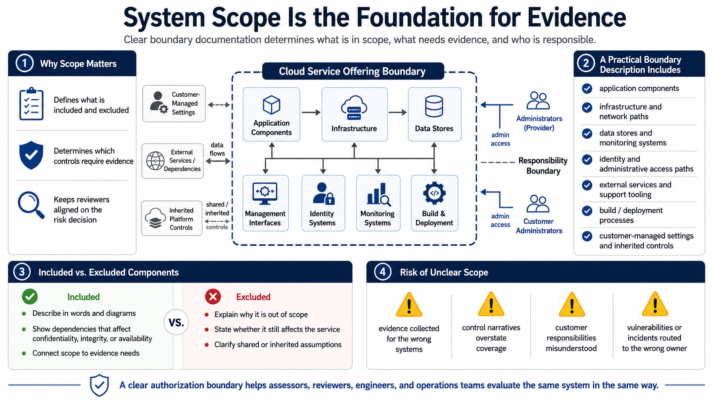

System Scope and Authorization Boundary
Connecting to LMS... Progress: in progress

Narration
System scope is the foundation for evidence. The cloud service offering must be described clearly enough that reviewers understand what is included, what is excluded, which environments matter, which dependencies support the service, and where customer responsibilities begin. Boundary documentation is not just a compliance diagram. It determines which controls need evidence and which systems are relevant to the risk decision.
A practical boundary description includes application components, infrastructure, data stores, management interfaces, identity systems, network paths, external services, support tooling, build and deployment processes, and monitoring systems as appropriate. It should also describe data flows, administrative access paths, customer-managed settings, inherited platform controls, and dependencies that affect confidentiality, integrity, or availability. Scope should be visible in words and diagrams.
Included and excluded components need careful treatment. If a component is excluded, the documentation should make clear why it is outside the cloud service offering and whether it still affects the service. If an external service is relied upon, the team should explain the relationship and any inherited or shared control assumptions. Ambiguity creates gaps, especially when multiple teams assume someone else is responsible.
Unclear scope creates assessment and operational risk. Evidence may be collected for the wrong systems. Control narratives may overstate coverage. Customer responsibilities may be misunderstood. Vulnerabilities or incidents may be routed to the wrong owner. A clear authorization boundary helps assessors, reviewers, engineers, and operations teams evaluate the service consistently and act on the same understanding of what is in scope.